RTR: Imperium Surrectum
RTR: Imperium SurrectumMetulum
← all settlements · all regions · wiki index
The settlement of the region of Iapodia, held at the campaign start by Iapodes (Illyrian) — their capital.
Size: Large town · Population: 3,300 · Buildings: 9
What is already built
| Building chain | Level | Building chain | Level | Building chain | Level | Building chain | Level | ||||
|---|---|---|---|---|---|---|---|---|---|---|---|
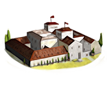 | Government (governor) | Governor's Villa | 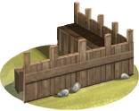 | Walls | Wooden Palisade | 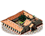 | Government (homeland) | Homeland | 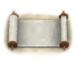 | Region Information | Region Information Scroll |
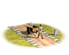 | Roads | Roads | 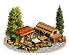 | Traders | Local Barter | Military Industrial Complex | Basic Armoury | Forest Clearance Farming (crops) | Slash and Burn (Crops) | ||
| Temples | Shrine |
What can be recruited here
| Unit | Raised at | Cost | Upkeep | Unit | Raised at | Cost | Upkeep | Unit | Raised at | Cost | Upkeep | |||
|---|---|---|---|---|---|---|---|---|---|---|---|---|---|---|
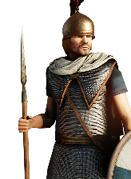 | Iapodian Elite Spearmen | Homeland | 2,174 | 796 | 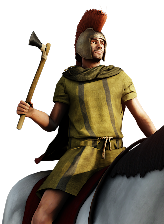 | Illyrian Axe Cavalry | Homeland | 1,494 | 601 | 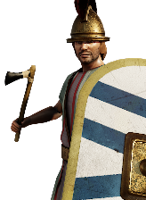 | Northern Illyrian Axemen | Homeland | 1,670 | 611 |
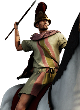 | Northern Illyrian Cavalry | Homeland | 1,239 | 499 | 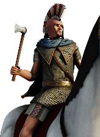 | Northern Illyrian General's Bodyguard | Homeland | 3,854 | 58 | 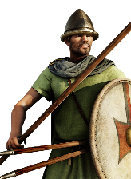 | Northern Illyrian Levy | Homeland | 1,548 | 567 |
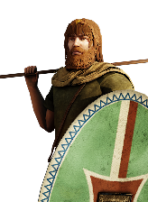 | Northern Illyrian Skirmishers | Homeland | 1,020 | 373 | 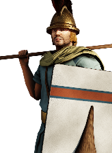 | Northern Illyrian Spearmen | Homeland | 1,633 | 598 | 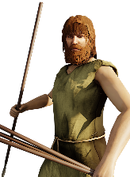 | Slave Javelinmen | Homeland | 805 | 295 |
| Slave Slingers | Homeland | 916 | 335 |
1 more unit is raised here once something changes — greyed out below, grouped by what each is waiting on.
Waiting on the Iapodian Swordsmen Reform — 1 unit
| Unit | Once you have | Cost | Upkeep | |||||||||||
|---|---|---|---|---|---|---|---|---|---|---|---|---|---|---|
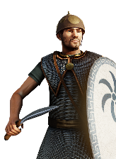 | Iapodian Swordsmen | Homeland | 1,854 | 679 |
3 more units once the building is up — greyed out, with what each needs.
| Unit | Once you have | Cost | Upkeep | Unit | Once you have | Cost | Upkeep | |||||||
|---|---|---|---|---|---|---|---|---|---|---|---|---|---|---|
| Ballistas | Armourer (Industry), Foundry (Industry) | 1,753 | 642 | Lithoboloi | Armourer (Industry), Foundry (Industry) | 2,533 | 927 |
| Unit | Once you have | Cost | Upkeep | |||||||||||
|---|---|---|---|---|---|---|---|---|---|---|---|---|---|---|
| Large Lithoboloi | Foundry (Industry) | 3,073 | 1,125 |